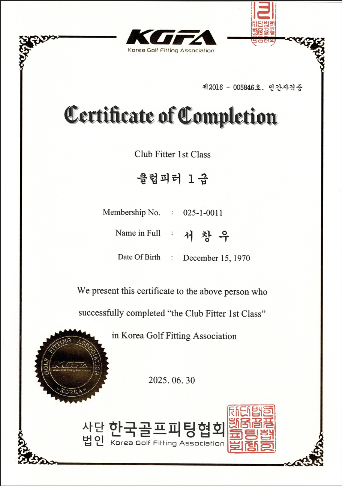

<!DOCTYPE html>
<html lang="ko">
<head>
<meta charset="UTF-8">
<meta name="viewport" content="width=device-width, initial-scale=1.0">
<title>피팅 서비스 | 3F 골프피팅 | BizHub Mir</title>
<meta name="description" content="Body · Club · Swing Fitting을 정밀 분석 장비와 공인 자격을 갖춘 피터가 진단하는 과학적 피팅. 단순 연습이 아닌, 데이터 기반 진단으로 단기간 실력 향상에 집중합니다.">
<link rel="preconnect" href="https://fonts.googleapis.com">
<link rel="preconnect" href="https://fonts.gstatic.com" crossorigin>
<link href="https://fonts.googleapis.com/css2?family=Noto+Sans+KR:wght@400;500;600;700;800;900&display=swap" rel="stylesheet">
<link rel="stylesheet" href="assets/core.css">
</head>
<body>
<div id="app"></div>
<script src="assets/core.js"></script>
<script>
const DOC_TITLE = { ko:`피팅 서비스 | 3F 골프피팅 | BizHub Mir`, en:`Fitting Service | 3F Golf Fitting | BizHub Mir` };

T.ko.golfFitting = {
  pageEyebrow:`3F 골프피팅 · 피팅 서비스`, pageTitle:`바디 · 클럽 · 스윙을 정밀 분석 장비로 진단하는 과학적 피팅`, pageDesc:`단순 연습이 아닌, 데이터 기반 진단으로 단기간 실력 향상에 집중합니다.`,

  pillarsEyebrow:`3 Fitting Pillars`, pillarsTitle:`Body · Club · Swing, 세 가지 피팅 영역`,
  pillarsDesc:`골프 지도는 신체·장비·스윙 등 여러 요소로 세분화됩니다. BizHub Mir 3F는 그중 검증된 자격을 갖춘 세 가지 피팅 영역에 집중합니다.`,
  pil1t:`Body Fitting`, pil1sub:`TPI 기반`, pil1d:`신체 밸런스와 가동범위를 진단해 스윙에 맞는 몸의 조건을 만듭니다.`,
  pil2t:`Club Fitting`, pil2sub:`KGFA(대한골프피팅협회) 기준`, pil2d:`샤프트 · 헤드 · 라이각 등 클럽 스펙을 개인 스윙에 맞춰 조정합니다.`,
  pil3t:`Swing Fitting`, pil3sub:`Foresight Sports PEAK 프로그램`, pil3d:`정밀 데이터 분석으로 스윙 궤적과 임팩트를 진단하고 개선 방향을 제안합니다.`,
  pilDetailLink:`상세설명 보기`,

  processEyebrow:`Process`, processTitle:`피팅 프로세스`,
  s1t:`진단`, s1d:`바디 밸런스와 스윙 궤적을 정밀 분석 장비로 측정합니다.`,
  s2t:`분석`, s2d:`측정 데이터를 기반으로 클럽 스펙(샤프트·헤드·라이각 등) 적합도를 분석합니다.`,
  s3t:`솔루션 제안`, s3d:`개인 맞춤 클럽 세팅과 스윙 개선 방향을 제안합니다.`,

  expertEyebrow:`Expert`, expertTitle:`피팅을 이끄는 전문가`,
  expertName:`Golf Fitter Dr. Suh`, expertPh:`Golf Fitter Dr. Suh`,
  expertBio1:`Dr. Suh는 한국에서 화학공학 박사 학위를 취득한 후 한국에서 10년 이상 바이오의약품 개발에 종사했고, 이후 인도네시아 법인장으로 부임하여 15년간 의약품 연구·개발·생산을 이끌었습니다. 인도네시아에서 골프를 시작한 그는 스윙 메커닉스에 물리적으로 접근하고, 클럽 피팅을 배우고, 스포츠 심리학을 공부하며 골프 피팅에 필요한 바디·클럽·스윙 피팅 분야의 자격증을 모두 획득했고, 아마추어가 가장 효율적으로 퍼포먼스를 향상시키는 방법에 집중해 왔습니다.`,
  expertBio2:`많은 골프 티칭 프로들이 자신의 경험에 의존하거나 하나의 정형화된 방법만을 고수하는 것을 관찰한 그는, 골퍼마다 신체 조건·나이·성별·성격이 다르다는 점을 인식하고 골프에 대한 기술적 접근법을 발전시켜왔습니다. 최신 시뮬레이터로 수집한 데이터를 활용해 개선이 필요한 부분을 파악하고 가장 효과적인 방법을 제안합니다.`,
  expertBio3:`스윙 변화로 인해 최적의 퍼포먼스를 내는 데 어려움을 겪는 골퍼들에게는 클럽 피팅을 제공합니다. 또한 연습장과 달리 필드에서 어려움을 겪는 골퍼들에게는 마인드 컨트롤을 지도합니다.`,
  cert1t:`Body Fitting`, cert1sub:`TPI Level 1 Certified`,
  cert2t:`Swing Fitting`, cert2sub:`PEAK Level 1, Foresight Sports`,
  cert3t:`Club Fitting`, cert3sub:`KGFA Club Fitter 1st Class`,
  cert4t:`Mental Fitting`, cert4sub:`Sports Psychology Counselor`,

  boxTitle:`100% 회원 예약제`, boxDesc:`모든 피팅 세션은 사전 예약을 통해서만 진행되며, 예약 고객에게 방해받지 않는 전용 시간을 보장합니다.`,
  ctaTitle:`피팅 상담을 신청해 보세요`, ctaDesc:`전문 피팅사가 1:1로 상담해 드립니다.`, ctaBtn:`피팅 상담 신청`,
};
T.en.golfFitting = {
  pageEyebrow:`3F Golf Fitting · Fitting Service`, pageTitle:`Scientific fitting that diagnoses body, clubs, and swing with precision equipment`, pageDesc:`Not just practice — data-driven diagnosis focused on improving your game in a short time.`,

  pillarsEyebrow:`3 Fitting Pillars`, pillarsTitle:`Body · Club · Swing — Three Fitting Disciplines`,
  pillarsDesc:`Golf instruction breaks down into many elements — body, equipment, and swing among them. BizHub Mir's 3F focuses on three certified fitting disciplines.`,
  pil1t:`Body Fitting`, pil1sub:`TPI-Based`, pil1d:`Diagnoses body balance and range of motion to build the physical foundation for your swing.`,
  pil2t:`Club Fitting`, pil2sub:`KGFA (Korea Golf Fitting Association) Standard`, pil2d:`Adjusts club specs — shaft, head, lie angle, and more — to match your individual swing.`,
  pil3t:`Swing Fitting`, pil3sub:`Foresight Sports PEAK Program`, pil3d:`Diagnoses swing path and impact through precision data and proposes an improvement direction.`,
  pilDetailLink:`View Details`,

  processEyebrow:`Process`, processTitle:`The Fitting Process`,
  s1t:`Diagnose`, s1d:`Measure body balance and swing path with precision analysis equipment.`,
  s2t:`Analyze`, s2d:`Analyze club-spec fit (shaft, head, lie angle, etc.) based on the measured data.`,
  s3t:`Recommend`, s3d:`Propose a personalized club setup and swing-improvement direction.`,

  expertEyebrow:`Expert`, expertTitle:`The Fitter Behind the Service`,
  expertName:`Golf Fitter Dr. Suh`, expertPh:`Golf Fitter Dr. Suh`,
  expertBio1:`After earning his Ph.D. in Chemical Engineering in Korea, Dr. Suh spent over 10 years developing biopharmaceuticals there before relocating to Indonesia as a country manager, where he led pharmaceutical research, development, and production for 15 years. Taking up golf in Indonesia, he approached swing mechanics from a physical-science perspective, studied club fitting, and researched sports psychology — earning certifications across all three fitting disciplines golf demands: body, club, and swing — with a focus on how amateurs can improve their performance most efficiently.`,
  expertBio2:`Having observed that many teaching pros rely solely on their own experience or a single one-size-fits-all method, he recognized that every golfer differs in physical condition, age, gender, and personality, and built his technical approach to golf around that reality. He uses data collected from the latest simulators to pinpoint exactly what needs improvement and recommend the most effective path forward.`,
  expertBio3:`For golfers struggling to perform at their best after a swing change, he offers club fitting. And for golfers who play well on the range but struggle out on the course, he coaches mental control.`,
  cert1t:`Body Fitting`, cert1sub:`TPI Level 1 Certified`,
  cert2t:`Swing Fitting`, cert2sub:`PEAK Level 1, Foresight Sports`,
  cert3t:`Club Fitting`, cert3sub:`KGFA Club Fitter 1st Class`,
  cert4t:`Mental Fitting`, cert4sub:`Sports Psychology Counselor`,

  boxTitle:`100% by Reservation`, boxDesc:`Every fitting session runs strictly by appointment, guaranteeing undisturbed, dedicated time for each guest.`,
  ctaTitle:`Book a fitting consultation`, ctaDesc:`Get a 1:1 consultation with a professional fitter.`, ctaBtn:`Book a Fitting`,
};

function renderGolfFitting(lang){ const t = T[lang].golfFitting; return `
${siteHeader('golf-fitting', lang)}
${pageHero('golf-fitting','green', lang, t.pageEyebrow, t.pageTitle, t.pageDesc)}
<section class="section">
  <div class="wrap">
    ${eyebrow(t.pillarsEyebrow)}
    <h2 class="sec-h2">${t.pillarsTitle}</h2>
    <p class="sec-desc">${t.pillarsDesc}</p>
    <div class="grid-3">
      <div class="card icon-top card-clickable" onclick="navigate('golf-fitting-body')">
        <div class="ic">${icon('users',24)}</div>
        <h4>${t.pil1t}</h4>
        <span class="badge green" style="margin-bottom:10px;">${t.pil1sub}</span>
        <p>${t.pil1d}</p>
        <span class="floor-link golf" style="margin-top:14px;">${t.pilDetailLink} ${icon('arrowRight',13)}</span>
      </div>
      <div class="card icon-top card-clickable" onclick="navigate('golf-fitting-club')">
        <div class="ic">${icon('briefcase',24)}</div>
        <h4>${t.pil2t}</h4>
        <span class="badge green" style="margin-bottom:10px;">${t.pil2sub}</span>
        <p>${t.pil2d}</p>
        <span class="floor-link golf" style="margin-top:14px;">${t.pilDetailLink} ${icon('arrowRight',13)}</span>
      </div>
      <div class="card icon-top card-clickable" onclick="navigate('golf-fitting-swing')">
        <div class="ic">${icon('target',24)}</div>
        <h4>${t.pil3t}</h4>
        <span class="badge green" style="margin-bottom:10px;">${t.pil3sub}</span>
        <p>${t.pil3d}</p>
        <span class="floor-link golf" style="margin-top:14px;">${t.pilDetailLink} ${icon('arrowRight',13)}</span>
      </div>
    </div>
  </div>
</section>
<section class="section">
  <div class="wrap">
    ${eyebrow(t.processEyebrow)}
    <h2 class="sec-h2">${t.processTitle}</h2>
    <div style="max-width:520px; margin-top:24px;">
      <div class="step"><div class="num">1</div><div><b>${t.s1t}</b><p>${t.s1d}</p></div></div>
      <div class="step-line"></div>
      <div class="step"><div class="num">2</div><div><b>${t.s2t}</b><p>${t.s2d}</p></div></div>
      <div class="step-line"></div>
      <div class="step"><div class="num">3</div><div><b>${t.s3t}</b><p>${t.s3d}</p></div></div>
    </div>
  </div>
</section>
<section class="section">
  <div class="wrap">
    ${eyebrow(t.expertEyebrow)}
    <h2 class="sec-h2">${t.expertTitle}</h2>
    <div class="grid-2 expert-grid" style="margin-top:22px;">
      ${ph(t.expertPh,'green')}
      <div>
        <h3 style="font-size:16px; font-weight:800; color:var(--ink); margin:0 0 10px;">${t.expertName}</h3>
        <p style="font-size:13.4px; color:var(--ink-soft); line-height:1.8; margin:0 0 14px;">${t.expertBio1}</p>
        <p style="font-size:13.4px; color:var(--ink-soft); line-height:1.8; margin:0 0 14px;">${t.expertBio2}</p>
        <p style="font-size:13.4px; color:var(--ink-soft); line-height:1.8; margin:0;">${t.expertBio3}</p>
      </div>
    </div>
    <div class="grid-4" style="margin-top:18px;">
      <div class="cert-stat">
        <div class="cert-info"><b>${t.cert1t}</b><span>${t.cert1sub}</span></div>
        
      </div>
      <div class="cert-stat">
        <div class="cert-info"><b>${t.cert2t}</b><span>${t.cert2sub}</span></div>
        
      </div>
      <div class="cert-stat">
        <div class="cert-info"><b>${t.cert3t}</b><span>${t.cert3sub}</span></div>
        
      </div>
      <div class="cert-stat">
        <div class="cert-info"><b>${t.cert4t}</b><span>${t.cert4sub}</span></div>
        
      </div>
    </div>
  </div>
</section>
<section class="section">
  <div class="wrap">
    <div class="box green">
      <h4>${icon('target',16)} ${t.boxTitle}</h4>
      <p>${t.boxDesc}</p>
    </div>
  </div>
</section>
<section class="section">
  <div class="wrap">
    <div class="cta-band" style="background:var(--green-soft); border-color:transparent;">
      <div>
        <h3 style="color:var(--green);">${t.ctaTitle}</h3>
        <p>${t.ctaDesc}</p>
      </div>
      <a class="btn btn-green" onclick="navigate('contact')">${icon('chat',16)} ${t.ctaBtn}</a>
    </div>
  </div>
</section>
${siteFooter(lang)}`; }

function renderCurrentPage(){
  document.documentElement.lang = currentLang;
  document.title = DOC_TITLE[currentLang] || DOC_TITLE.en;
  app.innerHTML = renderGolfFitting(currentLang) + fab(currentLang);
  window.scrollTo(0,0);
}
renderCurrentPage();
</script>
</body>
</html>
